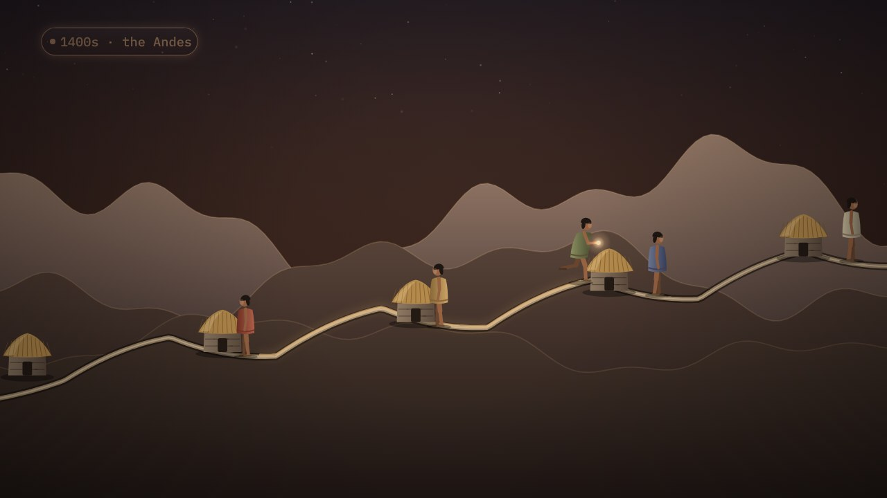

← Anterior · Película 4 de 11
Lo que tiene que ser capaz de hacer
Cambiaron los corredores; la capacidad de llevar un mensaje se quedó. Una capacidad dura más que quien la realiza, cómo y con qué.
Temas › Arquitectura empresarial › El mapa antes de los datos
Una rama derriba una línea en una noche de tormenta, y cuarenta casas quedan a oscuras. Tomás sigue la llamada de un hogar: un flujo de valor desde su lado, los equipos que hay detrás, un mapa de procesos por niveles, y detalle solo en el paso cuya regla depende del orden.
La película está en inglés, con subtítulos en español. Esta página, los capítulos y las preguntas están en español.
Presiona Reproducir, o salta a un capítulo. Activa Pausa para pensar y la película se detiene con una pregunta al final de los capítulos.
Descargar el video (en inglés)Archivos de subtítulosLeer el guion (en inglés)
¿Y ahora?
Las tres preguntas de Pausa para pensar, para una clase o un equipo. Abre una para ver la respuesta.
Película 5 de 11.

← Anterior · Película 4 de 11
Cambiaron los corredores; la capacidad de llevar un mensaje se quedó. Una capacidad dura más que quien la realiza, cómo y con qué.